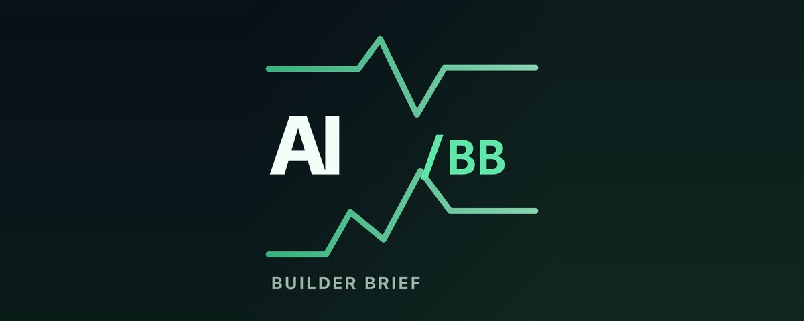

AI Builder Brief
Decision-changing AI developments for engineers shipping with models, agents, and open-source tools. Every ranked item links its primary artifact or 2× independent corroboration.

Sample Audio Synthesis (CastForge)
-16 LUFS · Evidence-linked
Evidence-Gated Signal Pipeline
Rolling 72-hour intake, 24h/7d momentum deltas, and bilingual builder synthesis.
Audio Episodes
Loading feed…